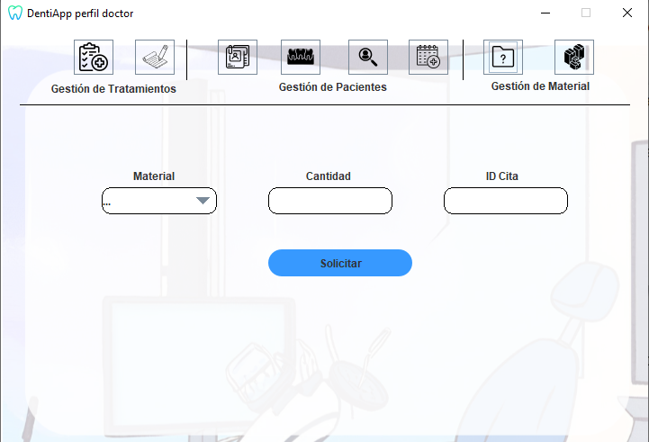

Ayuda: Solicitar Material
Los siguientes pasos le guiarán a través del proceso de creación
de un pedido de material a un proveedor:
- Añadir material:Seleccione el material que desea solicitar
utilizando el campo de búsqueda provisto (Material).
- Especificar cantidad: Después de encontrar el material,
especifique la cantidad que
desea solicitar (Cantidad).
- Seleccione una cita: Introduzca el id de la cita en el campo de texto (ID Cita) para la
que necesita el material.
- Enviar pedido: Una vez que haya agregado el material
deseado , el id de la cita y
la cantidad, haga clic en el botón "Solicitar" para enviar
la solicitud del material.

Si tiene alguna pregunta o necesita ayuda adicional,
no dude en comunicarse con nosotros.